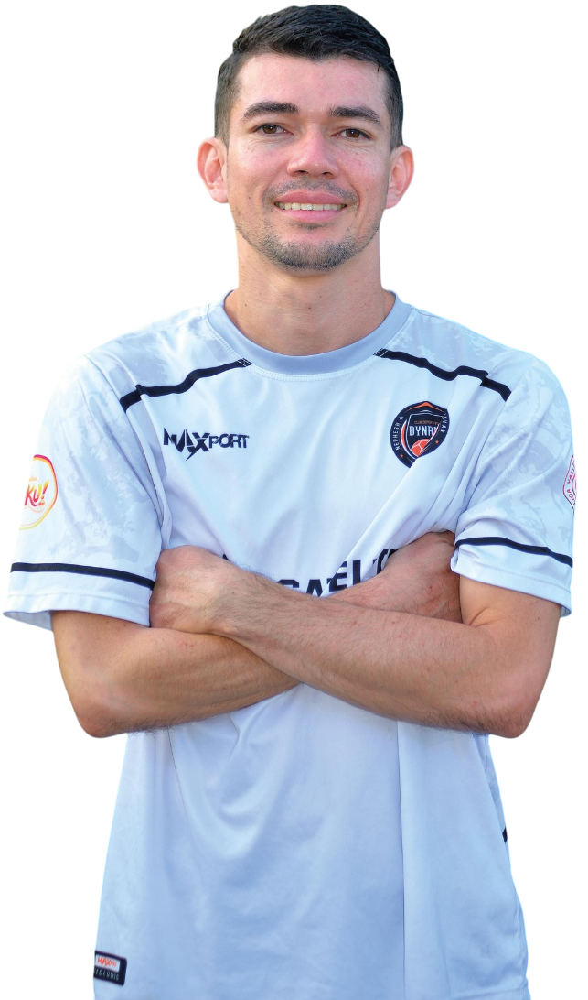
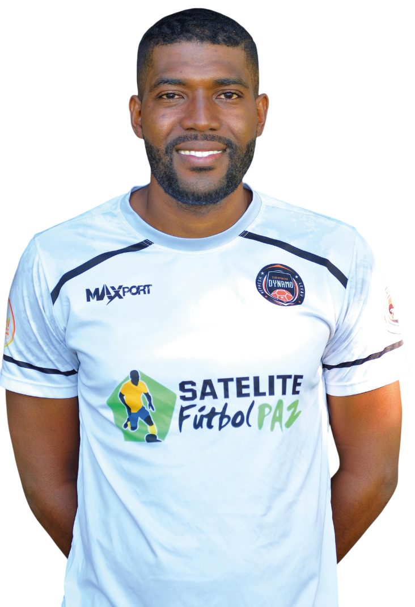
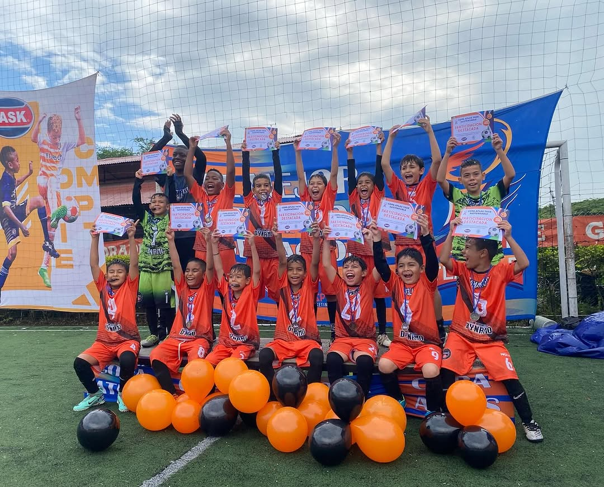

La Categoría Sub-10 del Club Deportivo Dynamo representa una etapa clave en el desarrollo futbolístico de nuestros jóvenes atletas. En este nivel, los niños y niñas comienzan a trabajar en fundamentos más avanzados, combinando técnica individual, conceptos tácticos y juego en equipo.
Las sesiones de entrenamiento están diseñadas para mejorar habilidades como el control del balón, el pase y el remate, mientras se les introduce en estrategias básicas del juego. Además, los entrenamientos incluyen actividades específicas para potenciar la resistencia, la agilidad y la toma de decisiones rápidas en el campo.
En esta categoría, también reforzamos valores como la perseverancia, el respeto por los compañeros y rivales, y la importancia del esfuerzo colectivo.
La Categoría Sub-10 es un espacio donde los jóvenes talentos no solo perfeccionan sus habilidades futbolísticas, sino también su carácter y pasión por el deporte.
Nuestros Jóvenes Talentos
Bienvenidos a la Categoría Sub-10 del Club Deportivo Dynamo.
Aquí descubrirás a los jóvenes futbolistas que comienzan a perfeccionar sus habilidades técnicas y tácticas, mientras fortalecen su comprensión del juego y su capacidad para trabajar en equipo.
En esta etapa, los entrenamientos se enfocan en potenciar su control del balón, precisión en los pases y capacidad para tomar decisiones rápidas, siempre en un ambiente de aprendizaje dinámico y motivador.
Guiados por un equipo técnico profesional, estos jugadores no solo desarrollan su talento futbolístico, sino que también consolidan valores como la perseverancia, el respeto y la responsabilidad, preparándose para futuros desafíos tanto dentro como fuera del campo.

Jhoan Steven Porras
Formador DT Categoría Sub-10 B

Breiner Ortiz
Formador DT Categorías Sub-10
Juan Diego Sarria
Formador DT Categoría Sub-09
Juan Manuel Narvaez
Arquero
Juan Manuel Jimenez
Arquero
Santiago Giraldo
Defensa
Jeremias Carabali Escobar
Delantero
Alan David Ortiz
Delantero
×
Galería:
Trofeos de la Categoría Sub-10
Estos son los logros más destacados de la categoría Sub-10, fruto del esfuerzo, dedicación y pasión por el fútbol.
Liga Vallecaucana
Detalles
Años ganados: 2024
Subcampeonatos:
Ubicación: Valle del Cauca
Torneo Las Américas
Detalles
Años ganados: 2022
Subcampeonatos:
Ubicación: Colombia
Copa Bon Bon Bum
Detalles
Años ganados:
Subcampeonatos:
Ubicación: Colombia
Nuestros Jóvenes Talentos en Acción
Vive los momentos más emocionantes de los jóvenes futbolistas de la Categoría Sub-10.
Cada imagen captura su dedicación, progreso y pasión por el fútbol mientras perfeccionan sus habilidades y consolidan su identidad como jugadores.
Estos recuerdos reflejan su esfuerzo constante, el compañerismo y el espíritu de superación que los define como parte esencial de nuestro club.

×
¿Qué se enseña en la Categoría Sub-10?
En la categoría Sub-10, llevamos a los jugadores a un nivel más avanzado en el desarrollo técnico, táctico y mental, sentando las bases para un futuro exitoso en el fútbol.
Técnica Avanzada
Perfeccionamos el control del balón, pases precisos y disparos efectivos.
Estrategias de Juego
Introducimos tácticas ofensivas y defensivas para mejorar la comprensión del fútbol.
Cooperación en Equipo
Fomentamos el liderazgo y la comunicación dentro del equipo.
Actitud y Valores
Promovemos la resiliencia, el respeto y la mentalidad ganadora en cada sesión.
Condición Física
Trabajamos en la velocidad, agilidad y resistencia de manera progresiva.
Toma de Decisiones
Enseñamos a los jugadores a analizar el juego y decidir rápidamente en el campo.
¿Quieres formar parte de la familia Dynamo?
Completa la información y prepárate para escribirnos directamente por WhatsApp.